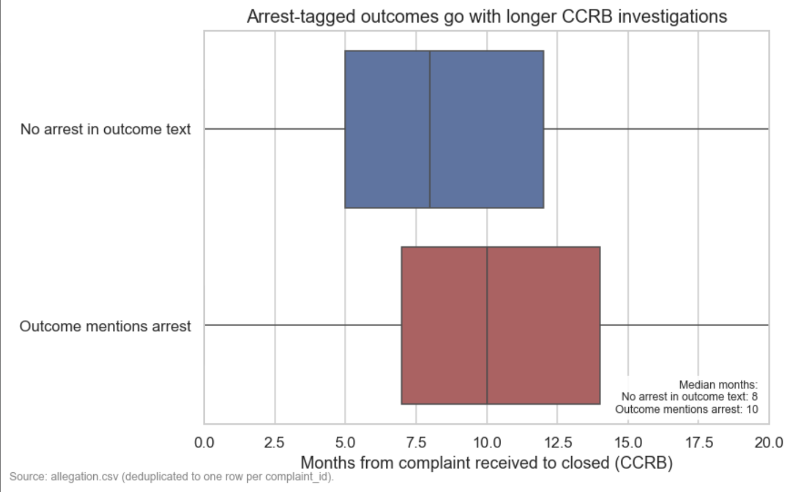
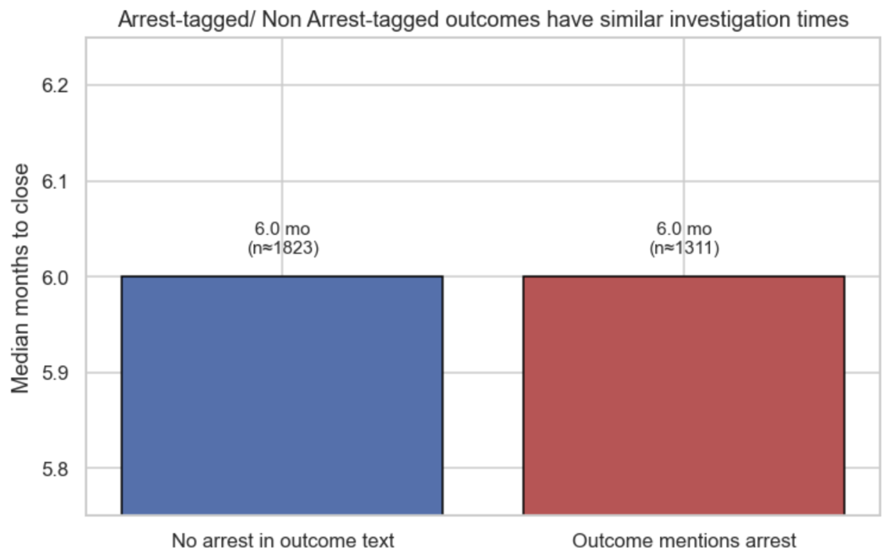

Proposition: Arrest-tagged outcomes have longer CCRB investigation durations than non-arrest-tagged outcomes on average.
FOR the Proposition

Design Decisions and Rationale:
- We used boxplots to show the full distribution of investigation durations, allowing comparison of medians, spread, and outliers between groups.
- The side-by-side layout and shared axis make it easy to see that arrest-tagged cases generally have longer investigation durations.
- Displaying the full distribution provides a more complete and honest representation of the data rather than relying on a single summary statistic.
AGAINST the Proposition

Design Decisions and Rationale:
- We only displayed the median values, which hides the variation and distribution differences between the groups.
- CCRB's Data Transparency Initiative starts in 2016 so to ensure consistency with how the data is currently structured.
- We also exclude data from 2020 as an outlier because it only has a half year of data
- By removing the full distribution and focusing on a single statistic, the visualization downplays meaningful differences and can mislead the viewer.
Final Reflection
Designing these two visualizations really showed us how much small choices can change the story the data tells. The “FOR” plot felt pretty straightforward since we were trying to show the full distribution using boxplots, which naturally highlights differences. The “AGAINST” plot was harder, because we had to think about how to simplify the data in a way that still looks reasonable but changes the conclusion like only showing the median and filtering the data. What surprised us most was how easy it was to create something that is technically correct but still gives a misleading impression just by leaving things out.
This process changed how we think about ethical analysis and visualization. We don't see it as just following strict rules, but more about being honest with how the data is presented. Choices like filtering data, selecting summary statistics, or setting axes all matter because they shape how someone interprets the results. At the same time, we realized that all visualizations are somewhat persuasive, you always have to decide what to highlight, you being persuasive isn't inherently wrong.
We think the line between acceptable and misleading comes down to whether important context is being hidden. If a visualization simplifies the data but still gives a fair overall picture, it feels acceptable. But if key information like variation or outliers is removed in a way that changes the takeaway, then it becomes misleading. The issue is that there isn't always a clear boundary, which is why it's important for us to think about how others might interpret the visualization, not just whether it is technically correct.